교육할 내용
- 교안AIoT 프로토타입 실물 시연과 발표
- 교안가상의 투자자가 되기: 얼마를 투자할 것인가
- 교안졸업식: 여정 돌아보기, 소감, 서로 격려, 단체 사진·만족도 조사
주의점
- 주영욱 대표발표만 1~2시간 걸린다. 앞 차시에서 시간을 아껴 둔다
- 주영욱 대표듣기만 하면 딴짓한다. 듣는 팀도 투자자로 참여시킨다
- 주영욱 대표렌탈 키트다. 부품을 학교에 다시 모아 두고 수량을 확인한다
중요한 점
- 주영욱 대표팀별로 투자 의향서를 쓰게 한다. 연필이든 볼펜이든 종이에
- 주영욱 대표주영욱 대표가 7~8년 운영해 온 가상 창업 수업(팀 구성 → 역할 → 가상 투자)과 같은 구조. 초등학생에게도 해 온 모델이다
- 주영욱 대표투자 피드백도 장점 중심으로
주영욱 대표 코멘트
주영욱 대표제가 중요하게 본 포인트는 12차시의 가상 투자금이에요. 제가 몇 년 전부터 하는 수업하고 똑같아요. 통화 1:12:20
주영욱 대표애들이 그냥 듣고 있으면 분명히 딴짓하고 노니까, 팀별로 투자 의향서를 작성하라고 해요. 연필로 적든 볼펜으로 적든. 통화 1:13:38
주영욱 대표애들 발표하는 데만 한두 시간 걸리거든요. 통화 48:37
교안 장표 14장 · 코멘트 3곳

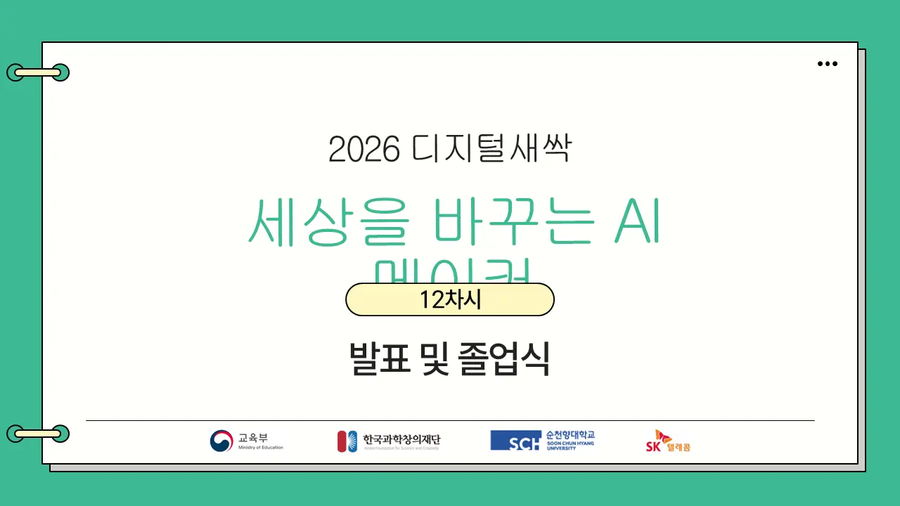

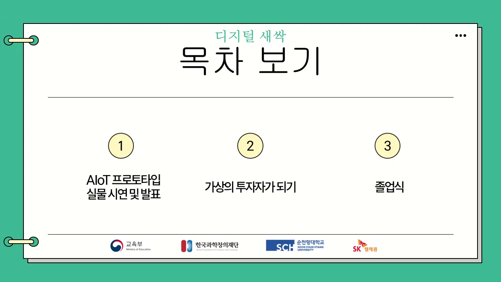

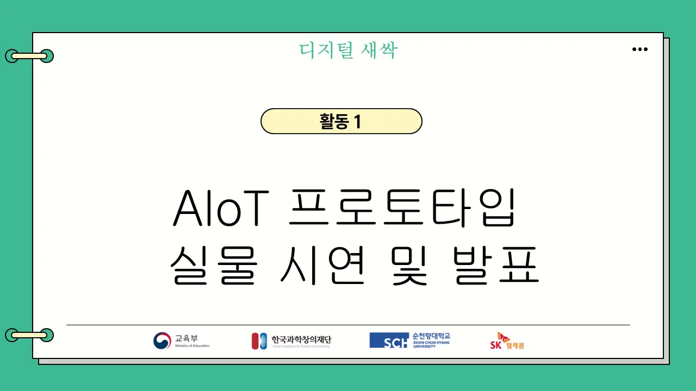
주영욱 대표발표 1~2시간. 듣는 팀은 투자자 역할.

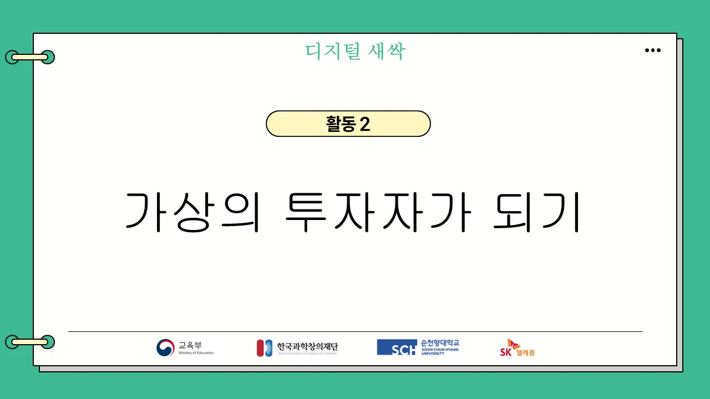

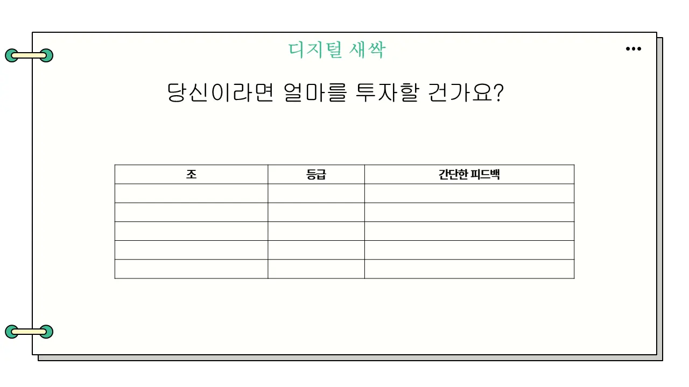
주영욱 대표팀별 투자 의향서를 종이에.

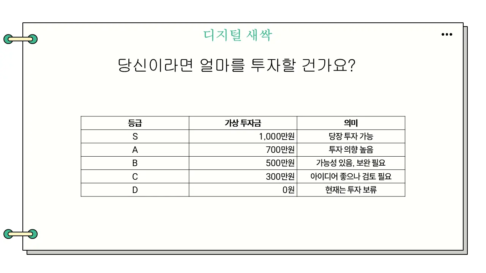

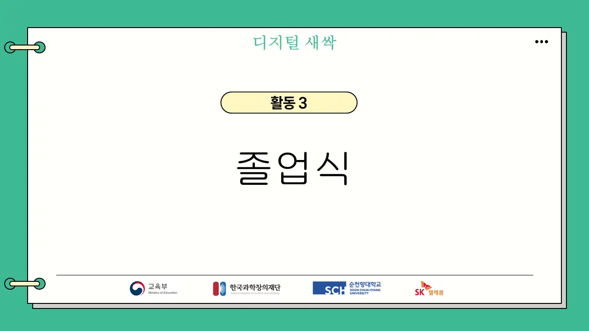


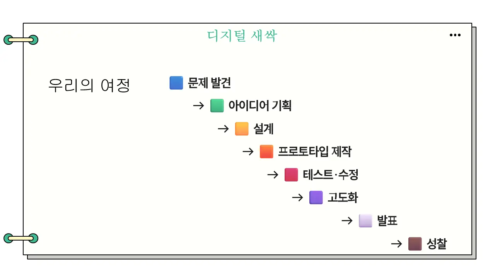

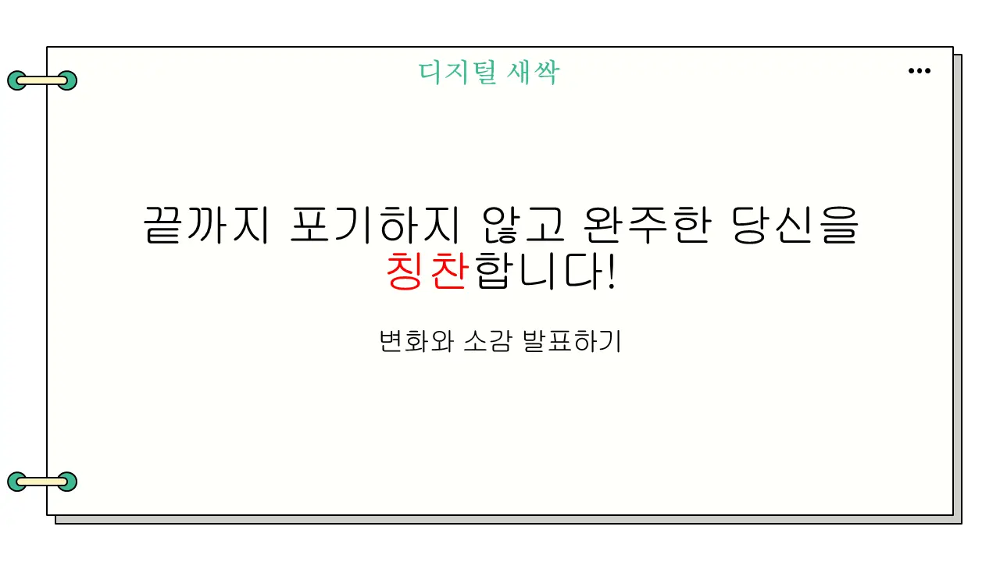

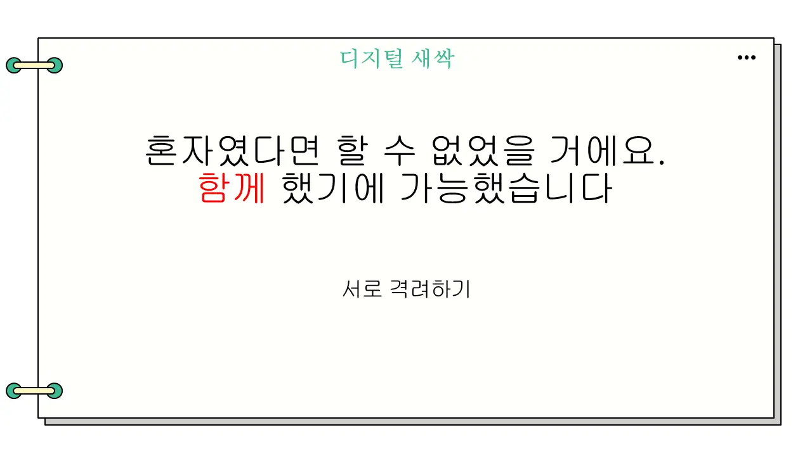

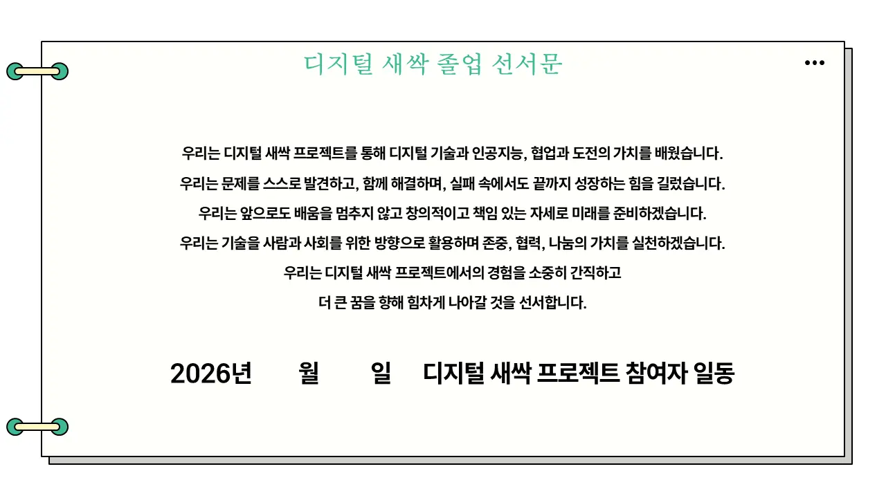

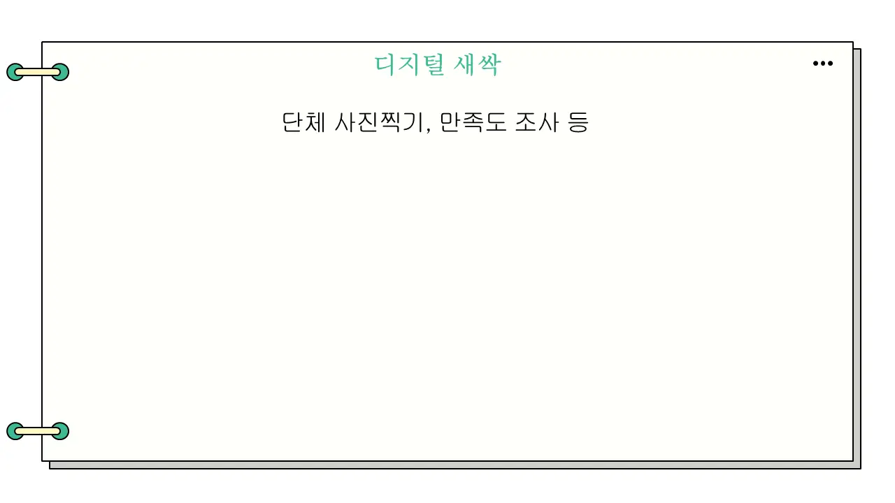
주영욱 대표단체 사진·만족도 조사 후 키트 해체·수량 확인·반납.